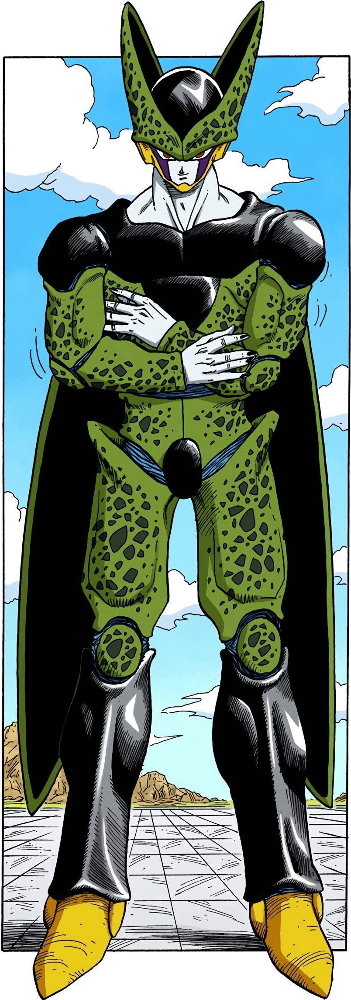

Cell (セル Seru) is the ultimate creation of Dr. Gero, designed via cell recombination[2] using the genetics of the greatest fighters that the Remote Tracking Device could find on Earth.
The result was a "perfect warrior", possessing numerous favorable genetic traits and special abilities from Goku, Vegeta, Piccolo, Frieza and King Cold.
He was one of the few Red Ribbon Androids not directly completed by Dr. Gero, instead being completed by Dr. Gero's Supercomputer in an alternate timeline.
After achieving perfection, he sought to dominate the world through fear of his incredible power.
He is the main antagonist of the overarching Cell Saga.
Cell has an original personality engineered by Gero's computer to combine the character traits of his genetic constituents which would be most useful for a perfect weapon.
Because his genetic composition includes DNA from Goku, Vegeta, and Piccolo, he is aware of their weaknesses and is therefore able to exploit them in battle.
However, Cell's overall personality changes drastically with each transformation.
Initially, Cell is completely single-minded in the pursuit of his goals and is very cautious, sneaky, cunning, knowledgeable, and calculating in achieving his main goal of perfection.
Upon reaching his first transformation, he becomes far more brash and impulsive in his actions, relying less on strategy and more on brute force, often becoming clouded and losing his ability to think rationally when things don't go his way.
However, he does retain at least some degree of a strategic mind, as he got the idea to exploit Vegeta's arrogant desire for a challenge to manipulate him into allowing him to absorb 18.
Upon reaching perfection, Cell displays a number of traits shared by those whose cells he possesses; Piccolo's cunning, Vegeta's pride, Goku's laid-back disposition, Frieza's smugness (as well as some of his psychopathy), and the Saiyan lust for battle.
In this form, he is also shown to be very calm and genuinely polite, albeit arrogant, until he loses the upper hand in combat.
Ironically, the arrogance Vegeta displayed to allow Cell to achieve his perfect form was the same that Cell used to force Gohan to awaken his hidden powers, leading him, as it had led Vegeta, to his own downfall.
Another of Cell's most distinguishable traits in this form is his uninhibited vanity, which he shamelessly displays by launching the Cell Games, a tournament organized solely to show off his newfound power.
It's also obvious during Cell's confrontation with Gohan when he affirms his true purpose: the annihilation of anything he considers imperfect--everyone and everything but himself.
When he is outmatched, however, he quickly becomes desperate and loses his rational approach, making several critical mistakes.
As Imperfect Cell, Cell is completely single-minded in the pursuit of his goals to complete his evolution, as he is extremely eager to discover what attaining perfection would feel like.
His desire is to absorb both Android 17 and Android 18.
Imperfect Cell is very cautious, sneaky, cunning, and calculating; he does not chase down the Androids directly since he knows he cannot beat them before he absorbs enough human energy.
Although obsessed with attaining perfection, Cell was willing to temporarily put aside his plans to absorb 17 and 18 if it meant that he had to deal any possible threat to his plans, as seen how he chose to dispatch Piccolo and attempted to do so with 16 rather than immediately going after 17 and 18.
However, despite his usually cautious and savvy nature, Imperfect Cell could still be seen to be somewhat arrogant and narcissistic, seen by how he openly revealed his plans to Piccolo when under the impression that he had won when he really did not.
After he achieves his Semi-Perfect form, Cell no longer cares about absorbing other creatures, and becomes obsessed with finding Android 18 to complete his quest for perfection.
He also becomes slightly more arrogant and narcissistic because of his power increase, as well as rash and impatient.
His arrogance is short-lived though; he is easily outclassed by Vegeta's Super Saiyan Second Grade form.
After finding that his Semi-Perfect form is no match for his opponent, Cell convinces Vegeta to allow him to absorb Android 18 to attain the Perfect Form (which he is able to do as he appeals to Vegeta's ego and the natural Saiyan drive to fight stronger opponents, both of which Cell is aware of, as he possesses Vegeta's cells).
He is also prone to tantrums when things don't go his way.
This is best evidenced when he was unable to find Android 18 and proceeded to blow up several islands in an attempt to force her to come out, not caring if his energy blasts resulted in her destruction if she tried to continue hunker down.
According to his bios in Dragon Ball Z: Budokai Tenkaichi 2 and Budokai Tenkaichi 3, in his new form, he seems to feel that he is the most powerful living specimen on the planet, and it is suggested that this arrogant attitude may have been influenced by Vegeta's genes (meaning Vegeta's cells may become more prominent while in this form, which seems to be supported by the fact he uses at least two of Vegeta's signature moves in this form, albeit only in the anime: Galick Gun and a modified Big Bang Attack).
It may also be due to his absorption of Android 17 and the genes of Frieza, both of whom are very egotistical, arrogant, narcissistic, and intolerant of the idea of anyone being better than themselves.
To further support the notion of his superiority, Android 16, who barely survives his brief encounter with this form of Cell, thinks to himself that there should be no one in the universe ready to challenge him at this point (and that it is odd how he is still so obsessed with achieving completion), until this preconception is shattered by Cell's embarrassment against the self-proclaimed "Super Vegeta".
After absorbing No. 18 and becoming perfect, Cell becomes significantly more arrogant and narcissistic in this form, due to the massive increase in power.
After attaining the perfect form, he had long desired, Cell admitted to Trunks that he had found himself with no other purpose, even killing Goku, which was Dr. Gero's intended purpose for Cell, did not seem to satisfy him.
Like Goku, he just wanted to fight to enjoy it.
Thus, he saw his Cell Games as the opportunity to discover a new purpose; to test his new-found power.
This could also be attributed by his own vanity.
In this form, Cell gains Frieza's polite mannerisms (though without the snide sarcasm) and ruthlessly sadistic personality, relishing in seeing people terrified, as he admitted to Future Trunks when he revealed his intention for the Cell Games.
This was further shown in the anime, while waiting for the Cell Games, he chose to terrorize the people of Earth simply for his own amusement.
Akira Toriyama himself surmised that the concept behind the Cell Games may have been influenced by King Piccolo's cells which makes sense as King Piccolo also enjoyed terrorizing the people of Earth in a similar manner and both broadcasted their evil intentions on television just to instill fear into Earth's population.
Thus, he possesses the villainous traits from King Piccolo, Vegeta, and Frieza.
Much like Goku, Cell seems to take on a carefree and laid-back attitude, not losing any form of his composure until he was faced with the prospect of a being stronger than him.
Cell has adopted Goku's, as well as Vegeta's, desire to battle strong opponents, which was another purpose of the Cell Games.
The fact that prior to facing Super Saiyan 2 Gohan, Cell still chose to hold back his full power, Cell was willing to handicap himself in order to challenge his own limits.
Despite this, however, if Cell finds that his opponents were not adequate challenges, he will not hesitate to finish the battle quickly or discontinue it, reflecting his arrogance.
Before fighting Gohan, Cell saw Goku as the only worthy opponent and displayed excitement when fighting him.
Cell even expressed discontent and outrage when Goku had decided to forfeit his battle against Cell.
After coming back in his Super Perfect form, the huge influx of power causes his already inflated ego to increase dramatically.
He becomes notably more deranged, frequently shouting and exhibiting bizarre facial ticks at random intervals (although this may be largely due to his rage over being humiliated by Gohan).
In addition, the intro narration for "Cell Returns!" has the narrator referring to Cell as a "demented demon".
Cell also became more hotheaded and rasher, seen by how he immediately chose to risk destroying the entire solar system simply to defeat Gohan.
After returning from his brush with death, Cell saw himself as true perfection, believing himself to be immortal, as he was unable to die (save for the unlikely possibility of dying in battle).
Oddly, despite having every intention of destroying the planet, he was heard thinking "That's the spirit" when Gohan's challenges Cell to a Kamehameha duel (although this was likely because he wanted the latter to give it his all as a means to prove Cell's own superiority).
Even as he was slowly destroyed by Gohan's final attack, Cell could not comprehend why he was defeated, exclaiming that he was perfection itself.
When in the throes of defeat, Cell seems to almost lose his sanity.
Screaming in rage and confusion as he believes no one can defeat "perfection" (or himself).
These traits show that Cell most likely has inherited some of Frieza's psychotic and sadistic traits.
As King Piccolo had previously also enjoyed himself by taking over the world as if it were a game and tried to rule the world through fear, Akira Toriyama wondered in an interview if Cell's similar way of doing things is from the influence of his Piccolo cells.
In Dragon Ball Xenoverse 2, Perfect Cell is shown to retain his fondness for absorbing people, though the reason for doing so is not to increase his power but for his own enjoyment.
To alleviate his boredom he offers to train the Future Warrior, though threatens he will absorb them should they fail or refuse.
While training the Future Warrior, Cell is impressed by the Warrior's growth and even finds that he enjoys teaching and training others, to the point he even suggests he might take on more students.
Presumably this trait may come from Piccolo and/or Goku.
If the Future Warrior manages to bond fully with both Cell and Frieza a special event occurs where Cell encounters 1st form Frieza for the first time.
Though he and Frieza are allies in the anime filler and Dragon Ball GT, during this meeting in Xenoverse 2 Cell is shown to look down on Frieza during this meeting as he contributes his loss during the Cell Games to Frieza's cells due to Frieza's loss to the Saiyans (Goku and Future Trunks), showing that Perfect Cell seems to blame his faults on others whose DNA he possesses such as Frieza.
In return Frieza is show to dislike Cell's smug and arrogant attitude towards him which ironically is a trait that comes from Frieza himself.
However, when Imperfect Cell fights Frieza in the Xenoverse 2 there is a special dialog where Cell states that he guesses he should thank him for "supplying" his DNA, even calling it an act of generosity in the Funimation dub of Xenoverse 2.
If Perfect Cell fights with Cell Jr., it will act disrespectfully towards him angering Cell causing him to state "How dare you! How dare you act that way towards your father...! You are nothing but a miserable failure."
showing that he does not like being disrespected by their children.
In Xenoverse 2 when fighting Android 13, Imperfect Cell suspects that Android 13 may be one of his early prototypes as he notes his ability to grow stronger through absorbing the components of other Androids.
Perfect Cell (in both his Perfect and Super Perfect forms) however considers Android 13 to be an outdated model.
In PQ: "Miscalculations in Time", Imperfect Cell's time machine goes off course and ends up at the Cell Games.
Perfect Cell has nothing but scorn for his Imperfect self and calls him an idiot for ending up in the wrong age.
However Imperfect Cell is elated to learn the computer was right about his perfect form and resolves to absorb Perfect Cell and become a warrior of even greater perfection.
However, the result of him absorbing Perfect Cell if any are not shown.
Owing to his being created by Gero, his brain also has a memory databank that contains detailed information of all the known members of the Red Ribbon Army.
This is implied if the Future Warrior was training under Cell and approaches him while dressed up as General Blue, where he goes through the records in his brain and relays everything, he knows about the deceased Red Ribbon general and expressing disbelief at the claim of him being killed by a tongue.
In addition, although he fully acknowledges Gero's intended purpose of him being meant to avenge the Red Ribbon Army, his personal views on the matter varied between sources.
In FighterZ, he was shown to have no actual care for Gero's goal of restoring the Army or avenging it, mostly due to his narcissism.
However, in Atsumare! Gokū Wārudo, he was shown to be fully dedicated to completing this goal, even explicitly stating he intends to avenge the Red Ribbon Army by fighting Goku.
His English voice varies between forms.
In his imperfect form, he has a rasping, slightly sadistic voice.
In his semi-perfect form, he speaks in a somewhat more brutal manner with a slightly haughty tone.
In his perfect form and beyond, he is depicted as speaking with a posh English accent to emphasize his excessively arrogant nature.